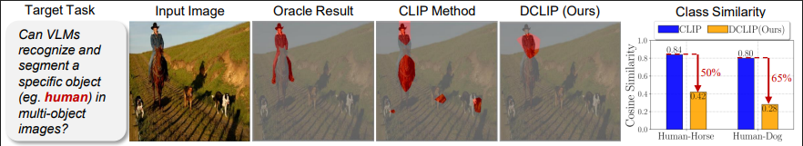
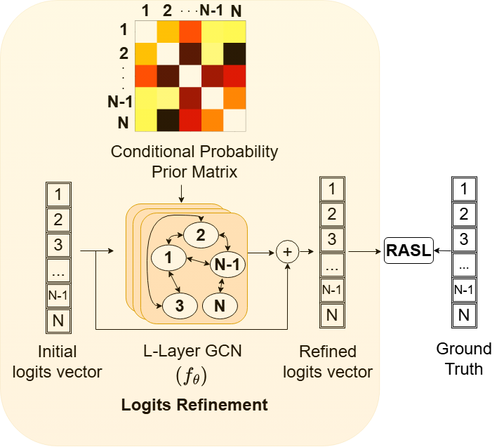
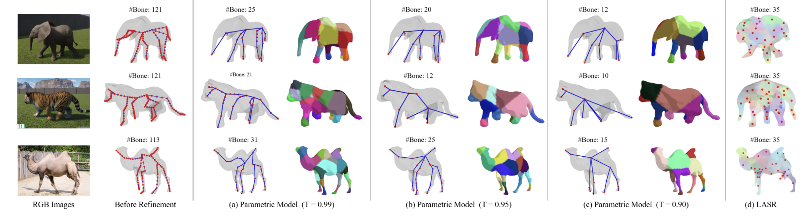
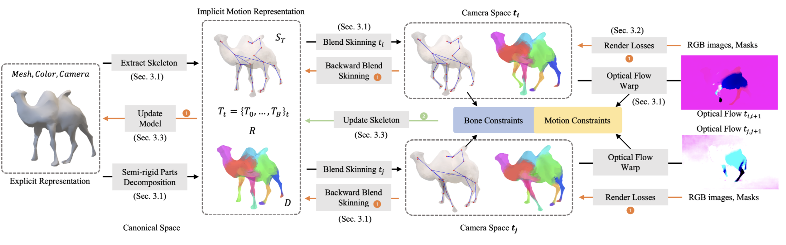

|

|
Efficiently Disentangling CLIP for Multi-Object Perception
Samyak Rawlekar,
Yujun Cai,
Yiwei Wang,
Ming-Hsuan Yang,
Narendra Ahuja
Under Review
Vision-language models like CLIP excel at recognizing the single, prominent object
in a scene. However, they struggle in complex scenes containing multiple objects.
We identify a fundamental reason for this limitation: VLM feature space exhibits
excessive mutual feature information (MFI), where the features of one class contain
substantial information about other, unrelated classes. This high MFI becomes
evident during class-specific queries, as unrelated objects are activated alongside
the queried class. To address this limitation, we propose DCLIP, an efficient
framework that learns an optimal level of mutual information while adding only
minimal learnable parameters to a frozen VLM. DCLIP uses two complementary
losses: a novel MFI Loss that regulates class feature similarity to prevent excessive
overlap while preserving necessary shared information, and the Asymmetric Loss
(ASL) that aligns image features with the disentangled text features. Through
this disentanglement, DCLIP reduces excessive inter-class similarity by 30%. On
multi-label recognition, DCLIP performs favorably over SOTA approaches on
VOC2007 and COCO-14 while using 75% fewer training parameters. For zero-shot
semantic segmentation, it shows improved performance across six benchmark
datasets. These results highlight the importance of feature disentanglement for
multi-object perception in VLMs.
|
|
|
PositiveCoOp: Rethinking Prompting Strategies for Multi-Label Recognition with Partial Annotations
Samyak Rawlekar, Shubhang Bhatnagar , Narendra Ahuja
WACV 2025
Vision-language models (VLMs) like CLIP have been adapted for Multi-Label Recognition (MLR) with partial annotations by leveraging prompt-learning, where positive and negative prompts are learned for each class to associate their embeddings with class presence or absence in the shared vision-text feature space. While this approach improves MLR performance by relying on VLM priors, we hypothesize that learning negative prompts may be suboptimal, as the datasets used to train VLMs lack image-caption pairs explicitly focusing on class absence. To analyze the impact of positive and negative prompt learning on MLR, we introduce PositiveCoOp and NegativeCoOp, where only one prompt is learned with VLM guidance while the other is replaced by an embedding vector learned directly in the shared feature space without relying on the text encoder. Through empirical analysis, we observe that negative prompts degrade MLR performance, and learning only positive prompts, combined with learned negative embeddings (PositiveCoOp), outperforms dual prompt learning approaches. Moreover, we quantify the performance benefits that prompt-learning offers over a simple vision-features-only baseline, observing that the baseline displays strong performance comparable to dual prompt learning approach (DualCoOp), when the proportion of missing labels is low, while requiring half the training compute and 16 times fewer parameters.
|
|

|
Improving Multi-label Recognition using Class Co-Occurrence Probabilities
Samyak Rawlekar*, Shubhang Bhatnagar* , Vishnuvardhan Pogunulu Srinivasulu, Narendra Ahuja
CVPRW 2024, ICPR 2024 (Oral Top-5%)
Multi-label Recognition (MLR) involves the identification of multiple objects within an image.
To address the additional complexity of this problem, recent works have leveraged information from vision-language models (VLMs) trained on large text-images datasets for
the task. These methods learn an independent classifier for each object (class), overlooking correlations in their occurrences. Such co-occurrences can be captured from the
training data as conditional probabilities between a pair of classes. We propose a framework to extend the independent classifiers by incorporating the
co-occurrence information for object pairs to improve the performance of independent classifiers. We use a Graph Convolutional Network (GCN) to enforce the
conditional probabilities between classes, by refining the initial estimates derived from image and text sources obtained using VLMs. We validate our method on four MLR
datasets, where our approach outperforms all state-of-the-art methods.
|
|

|
S3O: A Dual-Phase Approach for Reconstructing Dynamic Shape and Skeleton
Hao Zhang,
Fang Li,
Samyak Rawlekar,
Narendra Ahuja
ICML 2024
Reconstructing dynamic articulated objects from a singular monocular video is challenging, requiring joint estimation of shape, motion, and camera parameters from limited views...
|
|

|
LIMR: Learning Implicit Representation for Reconstructing Articulated Objects
Hao Zhang,
Fang Li,
Samyak Rawlekar,
Narendra Ahuja
ICLR 2024
3D Reconstruction of moving articulated objects without additional information about object structure is a challenging problem...
|
|